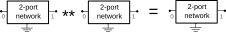
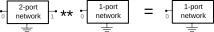
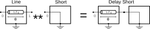
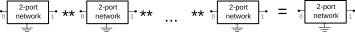
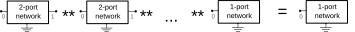
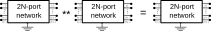
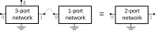
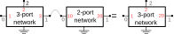
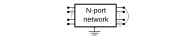
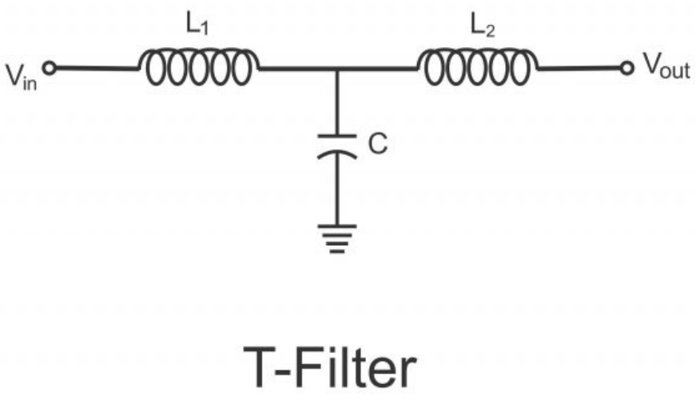

Connecting Networks#
scikit-rf supports the connection of arbitrary ports of N-port networks. It accomplishes this using an algorithm called sub-network growth[1], available through the function connect(). Note that this function takes into account port impedances. If two connected ports have different port impedances, an appropriate impedance mismatch is inserted. This capability is illustrated here with situations often encountered.
[1]:
import skrf as rf
Cascading 2-port and 1-port Networks#
A common problem is to connect two Networks one to the other, also known as cascading Networks, which creates a new Network. The figure below illustrates sile simple situations, where the port numbers are identified in gray:

or,

Let’s illustrate this by connecting a transmission line (2-port Network) to a short-circuit (1-port Network) to create a delay short (1-port Network):

Cascading Networks being a frequent operation, it can done conveniently through the ** operator or with the cascade function:
[2]:
line = rf.data.wr2p2_line # 2-port
short = rf.data.wr2p2_short # 1-port
delayshort = line ** short # --> 1-port Network
print(delayshort)
1-Port Network: 'wr2p2,line', 330.0-500.0 GHz, 201 pts, z0=[50.+0.j]
or, equivalently using the cascade() function:
[3]:
delayshort2 = rf.network.cascade(line, short)
print(delayshort2 == delayshort) # the result is the same
True
It is of course possible to connect two 2-port Networks together using the connect() function. The connect() function requires the Networks and the port numbers to connect together. In our example, the port 1 of the line is connected to the port 0 of the short:
[4]:
delayshort3 = rf.network.connect(line, 1, short, 0)
print(delayshort3 == delayshort)
True
One often needs to cascade a chain Networks together:

or,
which can be realized using chained ** or the convenient function cascade_list:
[5]:
line1 = rf.data.wr2p2_line # 2-port
line2 = rf.data.wr2p2_line # 2-port
line3 = rf.data.wr2p2_line # 2-port
line4 = rf.data.wr2p2_line # 2-port
short = rf.data.wr2p2_short # 1-port
chain1 = line1 ** line2 ** line3 ** line4 ** short
chain2 = rf.network.cascade_list([line1, line2, line3, line4, short])
print(chain1 == chain2)
True
Cascacing 2N-port Networks#
The cascading operator ** also works for to 2N-port Networks, width the following port scheme:

It also works for multiple 2N-port Network. For example, assuming you want to cascade three 4-port Network ntw1, ntw2 and ntw3, you can use:
resulting_ntw = ntw1 ** ntw2 ** ntw3
This is illustrated in this example on balanced Networks.
Cascading Multi-port Networks#
To make specific connections between multi-port Networks, three solutions are available, which mostly depends of the complexity of the circuit one wants to build:
For reduced number of connection(s): the
connect()functionFor intermediate complexity, where you might need to connect multiple Networks in parallel to the same intersection, we offer the
parallelconnect()method. This method provides a balance between the simplicity ofconnect()and the flexibility ofCircuitobject. For more information, please refer to the`paralleconnect()documentation <../api/generated/skrf.network.paralleconnect.html#skrf.network.paralleconnect>`__For more advanced connections between many arbitrary N-port Networks, the
Circuitobject is more relevant since it allows defining explicitly the connections between ports and Networks. For more information, please refer to the Circuit documentation.
As an example, terminating one of the port of an a 3-port Network, such as an ideal 3-way splitter:

can be done like:
[6]:
To connect port 1 of the tee, to port 0 of the delay short,
[7]:
terminated_tee = rf.network.connect(tee, 1, delayshort, 0)
terminated_tee
[7]:
2-Port Network: 'tee', 330.0-500.0 GHz, 201 pts, z0=[50.+0.j 50.+0.j]
parallelconnect() method also could handle this situation with just a slight change in syntax.
[8]:
terminated_tee_par = rf.network.parallelconnect([tee, delayshort], [1, 0])
terminated_tee_par
[8]:
2-Port Network: '', 330.0-500.0 GHz, 201 pts, z0=[50.+0.j 50.+0.j]
In the previous example, the port #2 of the 3-port Network tee becomes the port #1 of the resulting 2-port Network.
Multiple Connections of Multi-port Networks#
Keeping track of the port numbering when using multiple time the connect function can be tedious (this is the reason why the Circuit object can be simpler to use).
Let’s illustrate this with the following example: connecting the port #1 of a tee-junction (3-port) to the port #0 of a transmission line (2-port):

To keep track of the port scheme after the connection operation, let’s change the port characteristic impedances (in red in the figure above):
[9]:
tee.z0 = [1, 2, 3]
line.z0 = [10, 20]
# the resulting network is:
rf.network.connect(tee, 1, line, 0)
[9]:
3-Port Network: 'tee', 330.0-500.0 GHz, 201 pts, z0=[ 1.+0.j 20.+0.j 3.+0.j]
Networks Connections from the Intersection Perspective#
In the previous example, we briefly introduced the parallelconnect() method. In this section, We will detail the application scenarios of the parallelconnect() method with multiple examples and provide recommendations for comparing the three solutions.
Firstly, let’s consider the simplest example: inner-connecting any two ports within an N-port Network. This will result in an (N-2)-port Network.

Here, we can use the innerconnect() method to connect any two ports within the N-port Network
# Innerconnect the m'th and n'th ports of the N-Port Network
inner_network = rf.network.innerconnect(nport_network, m, n)
parallelconnect() method could handle inner-connect situation like this:
inner_network_par = rf.network.parallelconnect(nport_network, [[m, n]])
If you anticipate the need to inner-connect more than 2 ports, the innerconnect() method will not suffice for this task. You’ll need to look into using tee (splitter) or Circuit object to achieve your goal. However, parallelconnect() offers a straightforward solution for such cases,
# An example of inner-connect a list of ports of a N-port Network
ports_list = [[m, n, ..., y, z]]
inner_network2_par = rf.network.parallelconnect(nport_network, ports_list)
The second example involves connecting two multi-port Networks. As this cases has been previously demonstrated, we will not delve into it again here.
Moving on, let’s consider the parallel connection of multiple multi-port Networks. A common application of this is in the construction of a T-type filter circuit, figure taken from electroniclinic.com

Let’s ignore the specific details and just compare the three methods in implementing this example, you can use:
# 1. Connect() method with tee
t_type_filter_ntwk = rf.network.connect(L1, 1, tee, 0)
t_type_filter_ntwk = rf.network.connect(t_type_filter_ntwk, 1, C, 0)
t_type_filter_ntwk = rf.network.connect(t_type_filter_ntwk, 2, L2, 0)
t_type_filter_ntwk
# 2. Circuit object method
cnx = [
[(port1, 0), (L1, 0)],
[(port2, 0), (C , 1)],
[(port3, 0), (L2, 1)],
[(L1, 1), (C, 0), (L2, 0)]
]
t_type_filter_ckt = rf.cicuit.Circuit(cnx)
t_type_filter_ntwk = t_type_filter_ckt.network
t_type_filter_ntwk
# 3. Parallelconnect() method
t_type_filter_ntwk = rf.network.parallelconnect([L1, C, L2], [1, 0, 0])
t_type_filter_ntwk
It can be seen that the parallelconnect() method can realize the construction of T-type filter circuit very clearly and concisely.
In this section, we compared the parallelconnect() method and compared it with the connect()/innerconnect() method and the Circuit object for connecting Networks from an intersection perspective.
The parallelconnect() method excels in handling multiple parallel connections with minimal effort, making it ideal for scenarios requiring simplicity and efficiency. In contrast, the connect()/innerconnect() method is better suited for simpler, sequential connections, while the Circuit object is for complex, multi-layered connections with greater control.
From the intersection perspective, the Circuit object is best for managing complex networks with multiple intersections, a task that exceeds the capabilities of other methods, which are designed for single intersection scenarios. And innerconnect()/connect() methods are limited to handling connections between individual or pairs of Networks, parallelconnect() removes the restriction on the number of Networks and can efficiently establish connections for multiple Networks in a single
line of code, making it particularly advantageous for complex circuits with parallel connections at multiple points.
References#
[1] Compton, R.C.; , “Perspectives in microwave circuit analysis,” Circuits and Systems, 1989., Proceedings of the 32nd Midwest Symposium on , vol., no., pp.716-718 vol.2, 14-16 Aug 1989. URL: http://ieeexplore.ieee.org/stamp/stamp.jsp?tp=&arnumber=101955&isnumber=3167
[ ]: